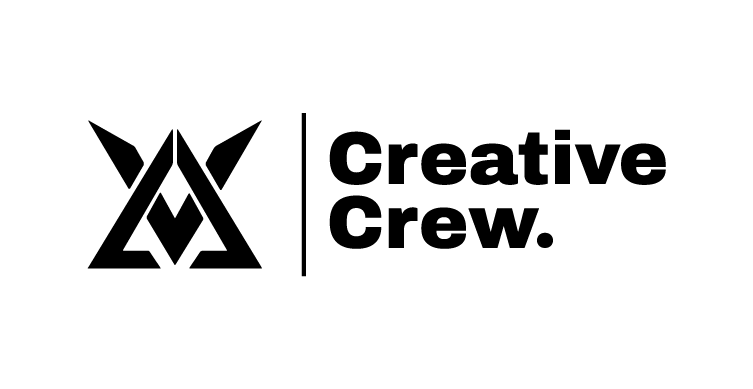

Introducción
de marca
VAL Audiovisual es un estudio de creación audiovisual: campañas, eventos, contenido para marcas, inmobiliario, deporte y piezas para redes.
Nacimos como un colectivo de creadores del Oriente Antioqueño con una idea simple y terca: nunca entregar dos veces lo mismo. Cada proyecto es una historia distinta, con su propia luz, su propio ritmo y su propio final.
La marca evoluciona de colectivo joven a estudio audiovisual premium.
Conservamos la energía, la cercanía y la autenticidad que siempre nos definieron. Pero las vestimos con un lenguaje más cinematográfico, oscuro y preciso — capaz de competir, de tú a tú, con los mejores estudios creativos y productoras del momento.
Que se vea caro
Antes de leer una palabra, el visitante debe sentir que está frente a trabajo de alto nivel. La calidad se comunica en el primer fotograma.
Marco, no protagonista
El material audiovisual manda. La identidad es el marco que lo hace ver mejor: tipografía fuerte, oscuridad, foco. Nunca compite con la imagen.
Impacto con control
Premium no es recargado. Es ritmo: escenas de impacto que respiran junto a zonas de calma. Si todo se mueve, nada destaca.
Diagnóstico
de identidad
- Logo e isotipo con reconocimiento: una "V" / sello que ya identifica al estudio.
- Naranja propio y memorable (#FD5400) — poco usado por la competencia local.
- Personalidad clara y auténtica: cercana, atrevida, anti-convencional.
- Sistema de sub-marcas vivo (Studio, Visual, Film by Val, Creative Crew).
- Lenguaje "sticker" muy juvenil que choca con la percepción premium buscada.
- Demasiadas variantes y versiones sin jerarquía: la marca se dispersa.
- Verde legacy que no aporta a un universo cinematográfico oscuro.
- Falta de un sistema gráfico y de movimiento documentado.
Quedar atrapados entre dos lenguajes — el colectivo informal y el estudio premium — y no comunicar ninguno con fuerza. La inconsistencia se lee como falta de oficio.
El núcleo reconocible se mantiene. Los ajustes son de aplicación y sistema, no de símbolo.
Refinar, ordenar y elevar. Menos elementos, mejor ejecutados, con reglas claras.
Esencia
de marca
Historias visuales que mueven marcas.
Hacer que cada marca, evento o historia se vea imposible de ignorar — y que eso se traduzca en algo real para quien confía en nosotros.
Artistas auténticos. Aventureros, impredecibles, que disfrutan alterar las expectativas. Cercanos sin perder oficio. Energía con precisión: nunca gritamos, pero siempre se nos nota.
- Calidad y nivel de estudio desde el primer segundo.
- Una mirada con punto de vista, no un servicio genérico.
- Confianza: detrás hay método, equipo y oficio.
- Verse barato, recargado o "de plantilla".
- Tono infantil o de meme cuando habla la marca madre.
- Efectos por efecto: ruido visual sin intención.
cine · luz · foco · grano · noche · ámbar · ritmo · corte · cuadro · profundidad · silencio · impacto
Dirección
creativa
Oscuridad con intención
Dark mode como base. El negro no es vacío: es el escenario que hace brillar la imagen y el ámbar. La luz se gana, no se regala.
El cuadro manda
Pensamos como cámara: encuadre, foco, profundidad. Letterbox, márgenes amplios y composición precisa antes que decoración.
Ritmo cinematográfico
Alternamos impacto y calma. Entradas que se sienten como cortes y disolvencias. La marca tiene tempo, no parpadea.
Texto breve, jerarquía fuerte
Pocas palabras, muy grandes o muy pequeñas. Nada intermedio y tibio. La tipografía es estructura, no relleno.
Calor sobre frío
El ámbar (#FD5400) es el punto de foco emocional. Aparece poco y siempre con razón: un CTA, un dato, un acento de luz.
Técnico y humano
Detalles de lenguaje de cámara — timecodes, REC, relación de aspecto — conviven con calidez. Precisión que no enfría.
Apple · DJI
Precisión, ritmo de scroll, lujo del espacio negativo.
A24
Atmósfera, grano, color con autoría y emoción.
Scroll por capítulos
Cada bloque se siente como una escena, no como una grilla.
VAL real
La energía y cercanía del colectivo, sin perder identidad.
Logo



Autoría / film
Equipo / culturaMargen libre alrededor del logo igual a la altura de la "V" del wordmark. Nada — texto, imagen ni borde — invade esa zona.
Wordmark: 96 px de ancho en digital · 22 mm en print. Por debajo, usar solo el isotipo (mínimo 28 px / 8 mm).
Sobre fondos oscuros: versión luz (#F6F6F6). Sobre claros: versión tinta (#0C0C0E). El ámbar solo para el isotipo de acento, nunca para el wordmark sobre foto.
- Una sola versión por pieza, con aire suficiente.
- Isotipo como "bug" / marca de agua en la esquina del video.
- Logo sobre negro, grafito o zonas oscuras de la imagen.
- Rotarlo, inclinarlo, deformarlo o agregarle sombras/contornos.
- Recolorearlo fuera de la paleta (nada de verde, degradados arcoíris).
- Colocarlo sobre zonas claras o saturadas sin contraste suficiente.
Paleta
de color
| Estado | Color | Uso |
|---|---|---|
| Default | #FD5400 | Botón primario, link activo. |
| Hover | #FF6A24 | Aclara + 1px arriba. |
| Pressed | #C7410A | Ember, oscurece. |
| Índigo lift | #4D4AD6 | Acento frío sobre oscuro. |
Índigo noche → ámbar amanecer. Solo para fondos atmosféricos amplios, nunca en texto ni en el logo. Imita un cielo graded, no un degradado web.
Naranja sobre void · luz sobre índigo · índigo sobre void.
Naranja sobre índigo (vibra) · verde legacy · texto sobre gradiente.
Tipografía
de ignorar
Archivo Black / Archivo 800–900 · tracking −0.03em · UPPERCASE para máximo impacto. Firma de marca recomendada: Sequel Sans Heavy Display (de la carpeta VAL) para los titulares hero; Archivo como equivalente web universal.
Archivo 600–700 · −0.02em.
Creamos piezas audiovisuales pensadas para vender, lanzar o posicionar. Texto claro, legible y breve.
Archivo 400 · 16px · interlínea 1.6.
JetBrains Mono · eyebrows, timecodes, datos.
| Nivel | Fuente · peso | Tratamiento |
|---|---|---|
| H1 / Hero | Archivo Black | UPPER · −0.04em |
| H2 / Sección | Archivo 900 | UPPER · −0.035em |
| H3 / Card | Archivo 700 | Sentence · −0.02em |
| Body | Archivo 400 | 1.6 · #9A9AA2 |
| Eyebrow | Mono 500 | UPPER · 0.28em |
- Más de dos familias en una misma pieza (Archivo + mono basta).
- Tamaños tibios e intermedios: o muy grande, o muy pequeño.
- Cursiva script (Roundhand) en cuerpo o UI — solo firma/acento puntual.
- Texto largo en UPPERCASE: solo titulares y labels cortos.
Estilo
visual
- Luz dirigida y dura. Clave baja, sombras marcadas, hora dorada o luz lateral fuerte. Negros profundos, no apagados.
- Color cálido. Temperatura 3000–4500 K, grado con ámbar/teal sutil. Evitar el flash plano y los tonos lavados.
- Encuadre con punto de vista. Líneas claras, profundidad, mucho aire. Mezclar planos amplios con macros de detalle.
- Movimiento real. Loops cortos, cámara lenta, gimbal suave. El video manda; el texto se superpone, breve.
Alto
Negros recortados, luces limpias sin quemar. La imagen respira oscuridad.
Cinematográfico
Textura fílmica sutil y constante. Une las piezas y aleja del look "digital plano".
Foco selectivo
Desenfoque óptico para guiar la mirada. El blur vive en la lente, no en el CSS.
Mínimos
Letterbox, timecode y un acento ámbar. Nada de filtros saturados ni HDR.
Sistema
gráfico
Las barras negras enmarcan imagen y, a veces, secciones enteras. Firma inmediata de "cine".
Esquinas tipo visor de cámara que encuadran contenido focal. Hairline, nunca grueso.
Timecodes, REC y datos en mono. Aportan veracidad de oficio.
Primario ámbar para la acción principal; fantasma con hairline para la secundaria. Radio 7px.
Mono, pill, para filtros de portafolio y categorías. Sólido ámbar = activo.
Superficie #141418, hairline 1px, radio 10px. Hover: borde ámbar + leve elevación. Sombras a ras, desde índigo, casi imperceptibles.
12 columnas, gutter 24px, asimetría intencional. Padding de sección 96–128px. Generoso por defecto.
Lineal, stroke 1.5, color del texto. Set único (Lucide). El isotipo es el único "icono" propio de marca.
Motion
identity
Reveal hacia arriba
Aparece desde abajo con máscara y fade, en stagger. Como subtítulos que entran. Nunca letra por letra ni rebote.
Escala lenta + clip
Ken-burns sutil (1.06→1) y aperturas tipo obturador/letterbox. La imagen "respira", no salta.
Loop & expand
Reels que escalan o se expanden con el scroll, con una frase superpuesta. Autoplay silenciado, con poster.
| Gesto | Duración | Easing |
|---|---|---|
| Micro (hover) | 180–260ms | ease-soft |
| Entrada bloque | 500–800ms | expo-out |
| Escena scroll | 700ms+ | expo-out |
| Transición | cut / dissolve | — |
cubic-bezier(0.16, 1, 0.3, 1)
- Rebotes, springs marcados, giros — la marca no es "cute".
- Todo moviéndose a la vez: mata la jerarquía.
- Parallax agresivo o pins largos en móvil.
- Ignorar prefers-reduced-motion: siempre respetarlo.
Aplicaciones
digitales
Cine que convierte
Dark base, hero con video loop, claim breve y CTA ámbar. Scroll por capítulos, portafolio filtrable, conversión recurrente sin saturar.
Sistema, no posts sueltos
Plantillas con letterbox, eyebrow mono y un dato ámbar. Coherencia de feed: la cuadrícula se ve como un mismo estudio.
Primer fotograma fuerte
Apertura con impacto, grano y subtítulo que entra. Bug del isotipo en esquina. Ritmo de corte marcado.
Foco + contraste
Una idea por thumbnail. Rostro o detalle nítido, fondo oscuro, máximo 3 palabras en Archivo Black.
Propuestas que venden
Slides oscuros, mucho aire, una idea por lámina. Mono para datos y precios. Cierra siempre con CTA claro.
La prueba
Grid de thumbnails, modal de video, CTA contextual ("Quiero algo así"). El trabajo habla; la marca enmarca.
Reglas
de uso
- Dejar respirar: oscuridad, aire y una sola idea por bloque.
- Usar el ámbar con avaricia — solo donde importa.
- Una versión del logo por pieza, con su área de seguridad.
- Apoyarse en imagen y video reales de alta calidad.
- Mantener Archivo + mono como único sistema tipográfico.
- Recargar de animación, gradientes o stickers.
- Recolorear el logo o usar el verde legacy en el sistema premium.
- Texto largo en mayúsculas o cursiva script en cuerpo.
- Naranja sobre índigo, o texto sobre el gradiente.
- Mezclar tonos fríos/azulados en la fotografía.
Checklist
de assets
- Isotipo y wordmark en PNG (blanco, negro, naranja, verde).
- Sub-marcas: Studio, Visual, Film by Val, Creative Crew.
- Paleta oficial (Gama de colores Val).
- Tipografías: Archivo (familia completa), Sequel Sans, Roundhand.
- Presentación de marca y concepto (.pdf), archivo editable (.ai).
- Logo e isotipo en SVG (vector limpio para web).
- Versión monocromática oficial definitiva del logo.
- Los 10 mejores videos / fotos, optimizados y con poster.
- Reel principal (15–40s) comprimido para hero.
- 3 testimonios reales o lista de clientes / proyectos.
- 6 servicios priorizados + claims / frases comerciales.
- Datos: WhatsApp, email, Instagram, agenda, cobertura geográfica.
Próximos
pasos
Dirección de marca
Validar paleta dark, retiro del verde, jerarquía de logos y sistema gráfico de este manual.
Assets faltantes
SVG del logo, reel, 10 piezas top, testimonios y datos de contacto.
Tipo & tokens
Cerrar Sequel Sans vs Archivo para display y exportar tokens de color/tipo.
Wireframe → UI
Recién entonces: estructura de la landing y diseño visual sobre esta base.
Ahora sí, construyamos la landing.